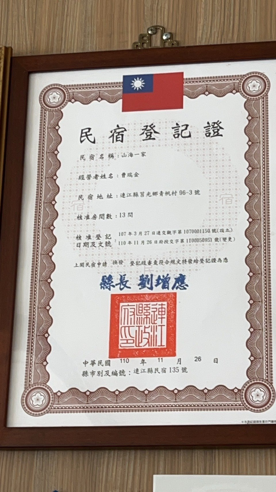

連續住宿期間，原則不每日更換床單；如有更換需求，可提前告知館方。

Mountain Sea Villa
山海一家會館外觀
13 間客房
適合雙人、家庭與跳島旅客
15:00 入住
11:00 退房
Wi-Fi / 禁菸
不接待寵物，接送請電話洽詢
4-9 月
藍眼淚與夜色海岸季節
Quality & Sustainability
合法登記、節能節水與安心入住提醒。
山海一家會館登記為連江縣民宿 135 號，並持續落實服務品質管理、續住減少床單更換、衣物安全提醒與節約用水用電措施。

清洗、晾曬或整理衣物前，請先確認口袋內無證件、現金、電子用品與貴重物品。
建築物能源效益等級已取得認證，館內 80% 以上燈具採用高效節能燈具。
先快速了解
西莒山海一家會館是什麼？
西莒山海一家會館是一間位於連江縣莒光鄉青帆村高點的民宿，主要提供西莒住宿、 房型選擇、訂房聯絡、交通接送洽詢與周邊旅遊資訊，適合雙人旅行、家庭住宿、 背包客跳島與想把青帆港、方塊海、藍眼淚排進同一趟旅程的人。
如果你想先快速判斷西莒山海一家會館適不適合自己，最重要的三件事是： 房型是否符合同行人數、是否要安排西莒夜間行程、以及是否需要青帆港接送協助。
入住前先看哪些重點
哪些旅客適合先從這裡開始
快速開始
第一次看山海一家，先從你最想確認的事情開始。
如果你想先找房型、交通、訂房方式或西莒行程，下面整理成幾個常用入口，方便直接找到對應資訊。
房型總覽與挑房方向
先看全部房型，再依海景、山景、家庭或背包客情境深入比較。
訂房方式與入住準備
已經知道日期或房型方向時，直接到訂房頁確認流程、匯款與接送安排。
交通方式與抵達安排
第一次到西莒時，先看南竿到青帆港的交通，再決定是否需要接送安排。
西莒行程與景點安排
如果你是先查藍眼淚、方塊海或兩天一夜行程，旅行頁與指南頁會更適合先讀。
房型比較與快速選擇
還在猶豫海景房和山景房差異時，先看比較頁能更快做選擇。
常見問題整理
想快速找方塊海、藍眼淚、接送、租機車或導覽問題，可直接從 FAQ 進入。
About
一間能看見青帆村過去與現在的民宿。
青帆村舊時因商船停泊而繁華，也留下「小香港」的地方記憶。山海一家所在位置， 正是俯瞰港口、聚落與海面變化的絕佳視角。
住進聚落高點
從房外望出去，不只是海景，更是青帆港、村落街巷與西莒生活節奏交織出的風景。
保留歷史感，也保留舒適度
山海一家帶著戰地與聚落歷史背景，現在則以明亮、乾淨且實用的住宿體驗迎接旅人。
適合慢旅，也適合跳島
無論是專程在西莒住兩晚，或從南竿、東莒延伸到西莒，這裡都很適合作為落腳點。
山海影像
西莒島風景
海岸、港灣與島上綠意，濃縮成一段西莒散策。


Rooms
依照同行旅伴，選一間適合的房。
以下房價依館方公開資訊整理，實際房況與價格請以電話確認為準。
西莒住宿怎麼選比較快？
先看同行人數，再看是否想要海景或壓低預算，通常就能先排除不適合的房型。 想看港景與慢旅氛圍的人，多半會先看海景雙人房；重視實用與預算的人，則更適合山景房或背包客房。


適合入住的情況
可能不那麼適合的情況
Experience
住在西莒，也順手把周邊風景一起排進行程。
青帆港與聚落街巷
從會館步行向下，就是感受青帆村生活線條與港邊空氣最直接的方式。
查看交通與青帆港動線藍眼淚與夜色海岸
每年約 4 至 9 月，菜埔澳、坤坵沙灘與青帆港周邊都是西莒熱門夜景路線。
查看藍眼淚住宿指南東莒、西莒慢遊
若安排跳島，可搭配東西莒交通，延伸燈塔、聚落、沙灘與戰地景觀行程。
查看兩天一夜行程安排交通方式
交通方式與 Google 地圖
先抵達南竿，再轉乘島際交通前往西莒，是大多數旅客前往青帆村的方式。
入住提醒
- 入住 15:00，退房 11:00
- 館內提供 Wi-Fi，全館禁菸
- 恕不接待寵物入住
- 房務清潔時段 12:00 至 14:00
交通建議
- 建議先確認前往馬祖的機票或船票再完成訂房
- 接送服務請於訂房時一併電話洽詢
- 實際船班與班次請以馬祖官方公告為準
Booking
訂房方式
歡迎來電確認日期、房型與入住人數，館方將協助完成訂房安排。
來電確認日期與房型
訂房建議於每日 09:00 至 21:00 來電，先確認日期、房型與入住人數。
3 日內支付訂金
完成預約後，請於 3 日內匯入住宿費 50% 作為訂金，逾期視同取消。
回傳匯款資訊
匯款後請通知帳號後五碼，並留下姓名與電話，方便館方核對與聯絡。
入住當日補足餘款
住宿餘款於入住當日付清；若為旺季與連假，建議更早完成確認。
訂金說明
確認房況後再提供匯款資訊
- 確認日期與房況後，館方會提供匯款方式與訂金說明。
- 一般需於 3 日內支付訂金，實際安排以館方通知為準。
- 匯款完成後，請回傳帳號後五碼、姓名與電話以利核對。
訂房與服務提醒
- 匯款後請通知帳號後五碼，並留下姓名與電話，方便館方聯絡確認。
- 本會館訂房皆贈送碼頭接送及早餐，請提早通知搭乘船班，以利安排接送。
- 另有租機車及餐點服務，如有需要可於訂房時提前告知。
Quick Estimate
住宿費用快速估算
選擇房型與晚數，即可快速掌握住宿預算與訂金參考；實際價格仍以電話確認為準。
常見問題
關於西莒山海一家會館的常見問題
以下問題依館方目前公開資訊整理，方便入住前先快速掌握重點。
西莒山海一家會館是什麼？
西莒山海一家會館是位於青帆村高點的民宿，提供住宿、房型資訊、訂房聯絡與西莒旅遊相關資訊。
山海一家會館適合誰？
適合雙人慢旅、家庭住宿、背包客跳島，以及想安排青帆港、方塊海與藍眼淚路線的旅客。
山海一家會館有哪些房型？
目前整理的房型包含海景雙人房、山景雙人房、山景四人房與背包客房，房況與價格請再向館方確認。
從南竿怎麼到山海一家會館？
一般會先到南竿福澳港，再搭交通船前往西莒青帆港，抵達後可與館方確認接送安排。
山海一家會館怎麼訂房？
建議先用電話或 Line 確認日期、房型與人數，再依館方提供的匯款資訊完成預約。
入住山海一家會館可以安排哪些西莒行程？
常見安排包含青帆港散步、菜浦澳、坤坵沙灘、方塊海與藍眼淚夜間路線，仍需依天候與季節調整。
Contact
想在西莒住一晚，現在就可以直接聯絡。
山海一家會館適合安排西莒慢旅、藍眼淚夜訪，也適合作為雙島跳島的住宿據點。 若你已經決定好日期，直接來電會是最快的方式。